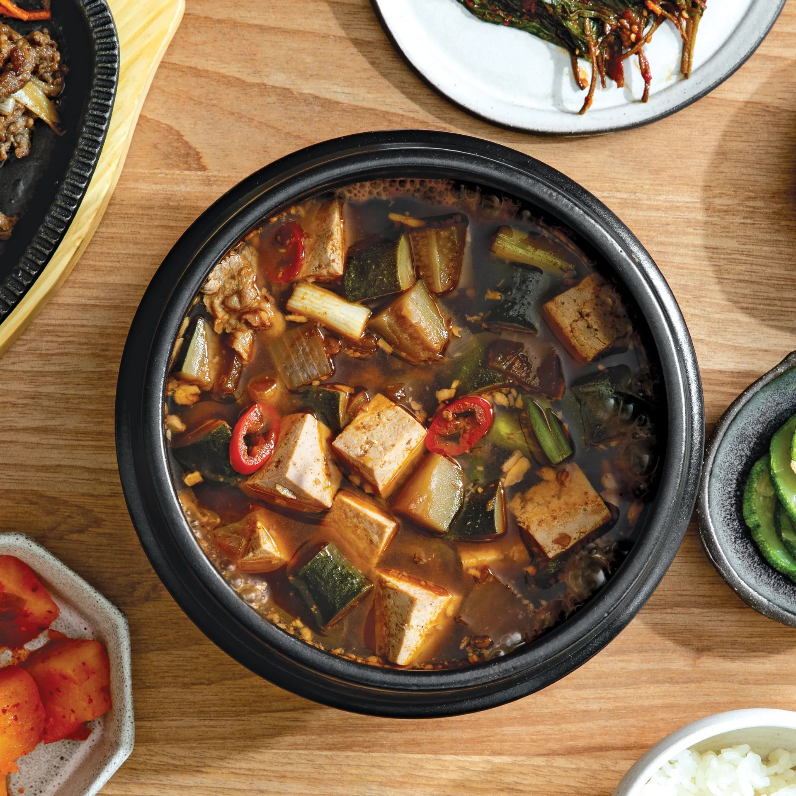
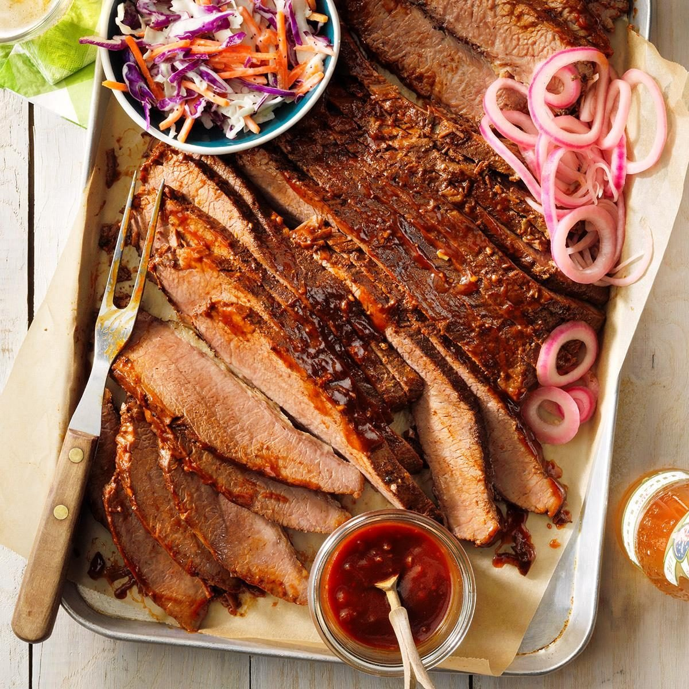
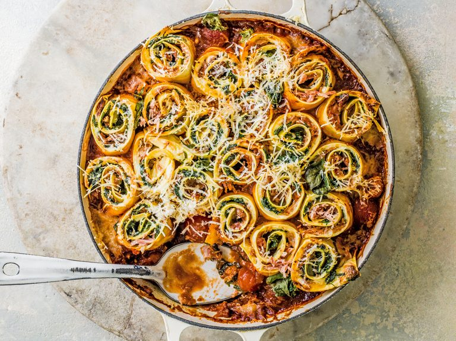

Rosemary Garlic Focaccia
Cuisine: Italian
Time: 1 h + 50 min
Ingredients
500 g - Strong white bread flour 2 x 7 g - Dried yeast sachets 1 tbsp - Sugar 3 tbsp - Olive Olive 1 bulb - Garlic, top sliced off 150g - Cherry tomatoes 1 handful - Rosemary sprigs

Fermented-Soybean Stew
Cuisine: Korean
Time: 40 min
Ingredients
4 cups - Dashi (Japanese broth) ¼ cup - Doenjang (Korean fermented soybean paste) 1 tbsp - Gochujang (Korean red chili paste) 1 tbsp - Gochugaru (Korean red chili flakes) 6 - Garlic cloves, minced 2 tbsp - Soy sauce

Texas-Style Beef Brisket
Cuisine: American
Time: 16 h + 30 min
Ingredients
6 pounds - Fresh beef brisket 3 tbsp - Worcestershire sauce 2 - Garlic cloves, minced 2 - Bay leaves 1/2 cup - Beef broth 1 tbsp - Chili powder 1 tsp - Celery salt
